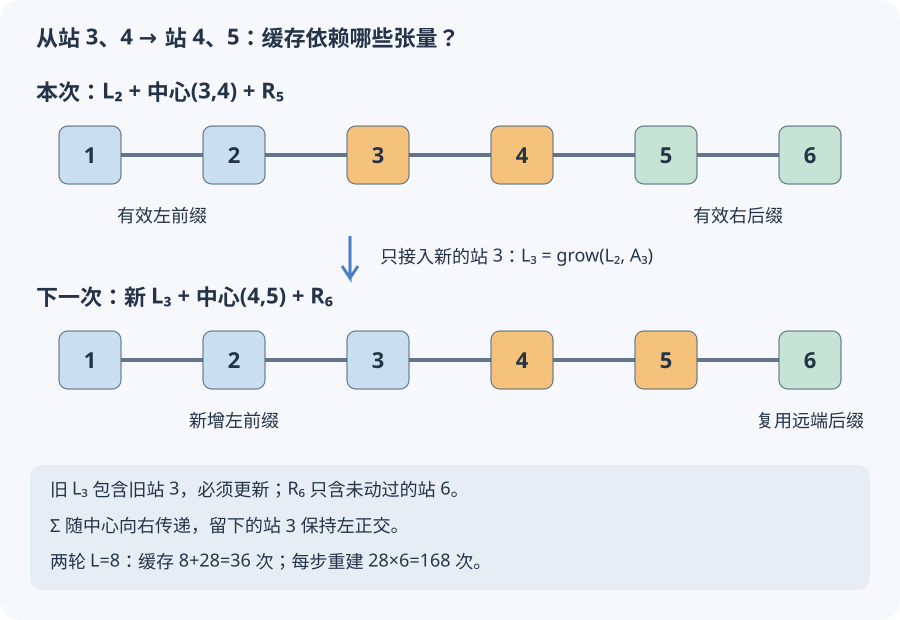

本页目录
基础衔接 12 · 真正存储 MPS：正交中心与环境缓存
先修：MPS 环境递推、两站点截断、往返扫描。本讲取消实验中的完整波函数存储，直接更新各站张量。学习重点是：哪些环境仍然有效，怎样让正交中心跟着扫描方向移动。
1. 从保存整张表，到保存一串张量
L 个二能级站点的波函数有 \(2^L\) 个系数。MPS 把它写成
相邻矩阵的公共指标叫键；本讲所有 \(d_j\le\chi\)。真实保存的系数数是 \(\sum_j2d_{j-1}d_j\)，至多随 L 线性增长，但这是给定 χ 的存储量，不保证任意态都能被小 χ 精确表示。它也不是扣除规范冗余后的独立参数数。极小系统反而可能多存：L=4、χ=4 的本实验最终存 40 个张量系数，完整态只有 16 个。
沿用开放 Ising 链、Pauli 本征值 ±1、J=1：
初态每站均为 \(\cos30^\circ|0\rangle+\sin30^\circ|1\rangle\)。因此
实验只保存实 MPS、块环境和小型局部矩阵，不构造 \(2^L\) 维态。独立验算程序才会展开小系统物理态，用另一条计算路径核对实现。
2. 中心为什么必须跟着方向走？
中心左边的张量满足左正交条件，右边的满足右正交条件：
从链端逐个收缩，单位阵不断传下去，所以两侧块基正交。中心两站合并为 \(M_{(\ell,s),(t,r)}\)，解局部问题后做 \(M=U\Sigma V^T\)。保留至多 χ 项并归一化；令 \(q=\|\Sigma_\chi\|_F\)：
| 扫描方向 | 新的左站矩阵 | 新的右站矩阵 | 正交中心 |
|---|---|---|---|
| 向右 | \(U_\chi\) | \(\Sigma_\chi V_\chi^T/q\) | 右站 |
| 向左 | \(U_\chi\Sigma_\chi/q\) | \(V_\chi^T\) | 左站 |
这里的矩阵需重新拆回物理指标与键指标。Σ 放在将继续移动的一侧，另一侧才能成为新的正交块。无截断时这只是表示方式的变化；有截断时则真的改变了物理态。不能一边把 Σ 留在身后，一边继续假定身后的块度量是 I。
实现会在维数允许时保留至多 χ 列，包括零奇异值对应的正交方向，让搜索空间能增长；这与上一讲只提取非零 Schmidt 支撑的约定不同。
3. 三种环境，把远处的链压成边界矩阵
记 \(\mathcal L_j=(G_j,K_j,C_j)\) 覆盖站 1…j：G 是块基重叠，K 是块内 Hamiltonian，C 是块最右端 X 的投影。空块为 (1,0,0)。接入张量 \(A^s\) 后，实际计算的是
最后一项把旧块末端和新站的相邻耦合接上。右环境 \(\mathcal R_j\) 覆盖站 j…L，反向收缩，C 指向块的最左端。完整递推与非正交情况见环境讲。
中心是 j、j+1 时，只需要 \(\mathcal L_{j-1}\) 与 \(\mathcal R_{j+2}\)。按左键、站 j、站 j+1、右键排列，局部矩阵为
七项分别负责两块内部、两个中心横场、两条外侧耦合、一条中心耦合，不重复也不漏边。在当前混合正交形式下 \(G_L=G_R=I\)，所以可以解普通对称本征问题；若块基不正交，就不能忽略广义本征问题的度量。
4. 缓存不是“旧结果都能继续用”
更新站 j、j+1 后，所有包含这两站的缓存都可能失效：\(\mathcal L_k\) 在 \(k\ge j\) 时需要更新，\(\mathcal R_k\) 在 \(k\le j+1\) 时需要更新。但本次使用的 \(\mathcal L_{j-1}\) 和 \(\mathcal R_{j+2}\) 完全在外侧，仍然有效。
向右走，只把新的左站接入 \(\mathcal L_{j-1}\)，得到 \(\mathcal L_j\)。下一中心是 j+1、j+2，需要的远端 \(\mathcal R_{j+3}\) 也没有碰过。向左走则只更新 \(\mathcal R_{j+1}\)。转向时，正好可以复用刚刚建立、且位于下一中心外侧的另一组缓存。

这不是凭站点编号复用任意旧矩阵。环境依赖具体张量与键坐标；即使物理态仅发生规范变换，跨越被变换张量的环境也必须一致地变换或重新计算。
本页一轮向右访问 L−1 条键，再向左访问 L−1 条键，转向端点会连续访问两次。r 轮共有 \(N=2r(L-1)\) 次更新。初建右环境需要 L 次递推，每次更新只新增一次，所以扫描计数为
若每步从链端重新建立两侧环境，每步需 L−2 次，合计 \(N_{\rm rebuild}=2r(L-1)(L-2)\)。最终独立收缩整条链测量范数与能量，另计 L 次。这里比较的是 G/K/C 递推次数，不是总运算时间；局部对角化、SVD 和一次递推内部的张量求和另有成本。本实现用直接求和与稠密求解，尚未优化成通用大规模 DMRG 程序。
5. 不展开全态，怎样得到精确参照？
本模型还有特殊结构。定义 Majorana 算符
由 \(Z_j=-ia_jb_j\)、\(X_jX_{j+1}=-ib_ja_{j+1}\) 得
其中 \(T_{jj}=g\)、\(T_{j+1,j}=-1\)，其他元素为零。对 T 做实 SVD，将两组 Majorana 各自正交旋转后，得到独立项 \(i s_k\tilde a_k\tilde b_k=s_k(2n_k-1)\)，故
浏览器对 L×L 的 \(T^TT\) 求本征值再开方，独立 NumPy 参照直接做 T 的 SVD；另用小链完整自旋 Hamiltonian 检查。g=1 时还可核对 \(E_0=1-\csc[\pi/(4L+2)]\)。开放边界是推导的一部分；周期链需要处理宇称与边界项，不能照搬。约 10⁻¹² 以下差异按浮点舍入解释。
6. 先预测，再看一次完整账本
先用默认 L=8、g=1、χ=2、两轮运行。预测环境次数为何是 36，而每步重建是 168；再将 χ 改成 4，比较存储、局部矩阵大小与剩余能量差。最后增加 L，看看完整态与张量存储的增长差别。
| g=1、两轮 | MPS 能量 | 精确 E₀ | 张量系数数 | 扫描环境次数 |
|---|---|---|---|---|
| L=8，χ=2 | −9.832701074 | −9.837951447 | 56 | 36 |
| L=8，χ=4 | −9.837949796 | −9.837951447 | 168 | 36 |
| L=12，χ=4 | −14.925947187 | −14.925971110 | 296 | 56 |
每次调参从同一初态重跑。本页始终接受归一化截断候选，没有开启上一讲的升能拒绝规则。未截断局部优化不升能，并不能推出截断后也不升能。不同 χ 改变了有限轮搜索路径；变分家族随 χ 增大而扩大，不等于每个有限轮运行的结果都有同样的单调保证。
局部矩阵最大只有 \(4\chi^2\) 维，本页 χ≤4，至多 64 维。没有一般 MPO、稀疏迭代局部求解器或初态敏感性分析，也没有计算完整物理残差。能量接近特殊模型的精确参照是一项验证；能量曲线变平本身不是全局收敛证明。
7. 两道迁移题
题一。 六站链刚更新站 3、4，接着向右更新站 4、5。本步需要的旧环境是哪两个？下一步应新增哪个环境？能否直接使用更新前的 \(\mathcal L_3\)？
画出环境覆盖的站点再判断
本步使用 \(\mathcal L_2\)（站 1、2）和 \(\mathcal R_5\)（站 5、6）。下一步需要 \(\mathcal L_3\) 和 \(\mathcal R_6\)：前者必须由有效的 \(\mathcal L_2\) 接入新的站 3 张量得到，后者只覆盖未改变的站 6，可以复用。更新前的 \(\mathcal L_3\) 含有旧站 3 张量，不能直接用；站点范围一样不代表矩阵内容仍然有效。
题二。 L=12、三轮往返需要多少次扫描环境递推？若向左移动时仍把 Σ 放到右站，为什么“乘回去还是同一个 M”不足以证明后续求解正确？
分别检查计数与度量
共有 \(2\times3\times11=66\) 次更新，缓存扫描含初建需 \(12+66=78\) 次；每步重建则需 \(66\times10=660\) 次，最后全链测量另需 12 次。若向左时仍取右站 \(\Sigma V^T\)，它一般不满足右正交条件：与其转置相乘得到 \(\Sigma^2\)，而不是 I。无截断时乘回去确实保持物理态，但把该右块当作正交基去解普通本征问题会用错度量。应按方向传递 Σ，或明确保留非平凡度量并解决相应问题。
速查与下一步
混合正交 MPS → 收缩两侧有效缓存 → 解两站点问题 → 按移动方向放置 Σ → 只延长刚离开的那侧环境 → 记录截断后能量。下一步是算符作用与稀疏局部求解、方差诊断和初态敏感性，不宜仅凭加长链就宣称算法已具备这些能力。
算法背景：Schollwöck 的 MPS 综述、两站点 DMRG 步骤。本页新增 29 组独立 NumPy 轨迹，并在四、六、八站逐步展开物理块基核验缓存矩阵与正交条件。资料核查：2026-09-08。
后续计算：MPO与Krylov把算符也组织成张量，通过 Hv 接口接回缓存扫描；显式局部残差与SVD丢弃权重分开检查。